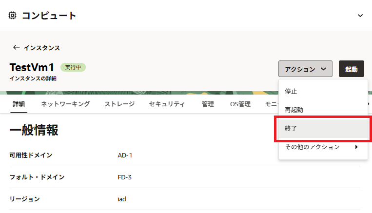
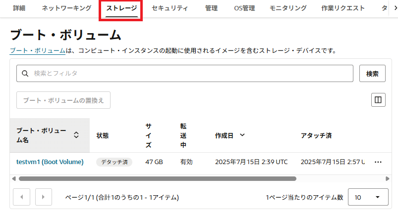

チュートリアル一覧に戻る : Oracle Cloud Infrastructure チュートリアル
リソースを必要なときに必要なだけ使える、というのがクラウドのいいところですね。そのために作成したインスタンスはいつでも停止、再起動、終了、再作成といった処理が行えるようになっています。このチュートリアルでは、そのようなインスタンスのライフサイクル管理をどう行うかと、それぞれのステータスで実際にインスタンスがどのような状態になっているのかについて確認していきます。
所要時間 : 約20分
前提条件 :
- その3 - インスタンスを作成する を通じてコンピュート・インスタンスの作成が完了していること
- その4 - ブロック・ボリュームをインスタンスにアタッチする を通じてブロック・ボリュームのアタッチが完了していること
注意 : チュートリアル内の画面ショットについては Oracle Cloud Infrastructure の現在のコンソール画面と異なっている場合があります
目次 :
参考動画：本チュートリアルの内容をベースとした定期ハンズオンWebinarの録画コンテンツです。操作の流れや解説を動画で確認したい方はご参照ください。
1. インスタンスの停止、再起動
まずは、インスタンスの停止、再起動処理と、その際に実行される動作について確認していきましょう。
1-1. ブートボリュームへのファイルの作成
OCIのインスタンスは、すべてブート・ボリュームと呼ばれる永続化されたiSCSIデバイスからネットワーク経由でブート(iPXEブート)されます。
このブート・ボリュームの変更(OSのパラメーター変更など)が、インスタンスのライフサイクル操作によってどのような影響を受けるかを確認するために、予めファイルを1つ作成します。
-
SSHターミナルを開き、 で作成したインスタンスにsshでアクセスします
-
アクセスしたユーザーホームディレクトリに、任意のファイルを作成します。 下記の例では、opcユーザーのホームディレクトリ(/home/opc)に、testfileというファイルを作成しています
[opc@testvm1 ~]$ pwd /home/opc [opc@testvm1 ~]$ touch testfile [opc@testvm1 ~]$ ls -l total 0 -rw-rw-r--. 1 opc opc 0 Feb 16 16:47 testfile [opc@testvm1 ~]$
1-2. インスタンスの停止
インスタンスを停止し、その際にどのようなことが起こるかをOCIコンソールから確認します。
-
コンソールメニューから コンピュート →
インスタンスを選択し、で作成したインスタンス名 (TestVM1など) のリンクをクリックします -
インスタンスの詳細画面の上部にある
停止ボタンを押します -
確認を求めるメッセージ・ダイアログが立ち上がるので、
インスタンスの停止ボタンを押します -
インスタンスのステータスが
停止中となり、その後停止済に変わりますsshでアクセスしていたターミナル・ウィンドウも接続が切断されています。(Tera Termの場合はウィンドウが閉じているはずです)
-
停止済になったインスタンスの状態を、OCIコンソールから確認します。 主な確認ポイントは以下のとおりです。-
インスタンス概要画面の
プライマリVNIC情報フィールドにおいて、プライベートIPアドレスとパブリックIPアドレスに、インスタンス起動時と同じIPアドレスが引き続き確保されていること -
アタッチされたブロック・ボリュームフィールドに、 でアタッチした追加ボリュームが引き続き表示され、アタッチ済 のステータスになっていること -
ブート・ボリュームフィールドに、ブートボリュームが表示され、アタッチ済のステータスになっていることNote
インスタンスが 停止済 ステータスになると、一部の例外のインスタンスを除き、インスタンスへの課金が停止します。一方ブロック・ボリューム等の確保済のストレージ・リソースは存続しているため、課金は継続します。 インスタンスのシェイプ名称のうち、DenseIO / HighIO / HPC / GPU という名称がつくインスタンスに関しては、例外的に 停止済 ステータスになってもインスタンスへの課金が継続します。インスタンス停止時の課金に関する詳細についてはマニュアルの こちら で確認できます。
-
1-3. インスタンスの起動
停止したインスタンスを再度起動し、挙動を確認します。
-
停止中のインスタンスの詳細画面上部の 開始 ボタンを押します
-
インスタンスのステータスが
実行中になるのを確認します ステータスが変わったらインスタンスの詳細情報を確認し、停止済のステータスの際と、表示されている情報を比較してください。 - sshターミナルを起動し、opcユーザーでsshログインします
Note
インスタンスがRUNNING ステートになった後、sshdが起動してsshアクセスできるようになるまで、さらに約3分程度かかります
- sshログインしたら、ステップ1-1で作成したブート・ボリュームのファイルを確認します
[opc@testvm1 ~]$ ls -l total 0 -rw-rw-r--. 1 opc opc 0 Feb 16 16:47 testfile [opc@testvm1 ~]$ pwd /home/opc [opc@testvm1 ~]$おそらくファイルが正しく表示されるはずです。 これは、ブート・ボリューム(OS領域)に対する変更が、インスタンスの停止、再起動処理を経ても永続化されていることを示します。
-
また、以下のコマンドを発行し、アタッチされているボリュームの情報を確認します
$ lsblkこのインスタンスにアタッチされている、ブートボリュームを含むボリュームの一覧が表示されています。
[opc@testvm1 ~]$ lsblk NAME MAJ:MIN RM SIZE RO TYPE MOUNTPOINT sdb 8:16 0 50G 0 disk sda 8:0 0 46.6G 0 disk tqsda2 8:2 0 8G 0 part [SWAP] tqsda3 8:3 0 38.4G 0 part / mqsda1 8:1 0 200M 0 part /boot/efi [opc@testvm1 ~]$/dev/sdb というボリュームが表示されていることがわかります。これは、 において追加でアタッチし、OSからiSCSIでログインしたボリュームです。 つまり、インスタンスの停止、再起動を経ても、ブロックボリュームへのiSCSIのログインが継続しており、再起動後に再びログイン処理を行う必要がないことがわかります。
2. インスタンスの終了(Terminate)
ここでは、インスタンスの終了(Terminate)処理を行って、その際の挙動について確認します。
-
コンソールメニューから
コンピュート→インスタンスを選択し、先程起動処理を行ったインスタンス名 (TestVM1など) のリンクをクリックします -
インスタンスの詳細画面の上部にある
アクション▼メニューから終了を選択します
-
インスタンスのブート・ボリュームをどうするかを選択するダイアログ・ボックスが起動します
アタッチされたブート・ボリュームを完全に削除というチェックボックスにチェックをつけると、インスタンスのブート・ボリュームが削除されます。 今回は、ブート・ボリュームを後ほど利用するので、チェックを外したままインスタンスの終了ボタンを押します。 -
インスタンスの終了処理がはじまります。終了処理中は
終了中...というステータスになります。 この処理の間に、インスタンス作成時に確保された各種のリソースが順にデタッチ、または削除されていきます。 OCIコンソール上では、リアルタイムで情報が変化し、削除されたリソースから表示が変化していきますので、リアルタイムで状況がどう変わるかを確認してみてください。 -
インスタンスの終了(Terminate)処理が完了すると、ステータスが 終了済 に変わります。 画面上のステータスアイコンで、ステータスが 終了済 になったことを確認します。
-
プライマリVNIC情報欄では、プライベートIPアドレスおよびパブリックIPアドレスが「 - 」になっていることを確認します。 これは、インスタンスの終了とともに、アタッチされていたインスタンスのプライベートIPアドレス、パブリックIPアドレスがデタッチされ、IPのプールに返還された状態であることを示しています。これらのIPアドレスは、他のインスタンスで再利用することができます。 -
アタッチされたブロック・ボリューム欄には、このインスタンスにはアタッチされたブロック・ボリュームはありません。と表示されています。 インスタンスの終了とともに、アタッチされていた追加ボリュームはデタッチされていることがわかります。
-
アタッチされたVNIC 欄には、何も表示されていません。インスタンスの終了とともに、アタッチされていた仮想NICはすべて削除されています。

Note
現在の Oracle Cloud Infrastructure では、インスタンスの削除時に仮想NICを残しておいて、他のインスタンスにアタッチするような機能(いわいるElastic Network Interface)の機能はありません。この機能は将来の実装が予定されています。 また現在でも、予約IP機能をつかったグローバルIPアドレスの移動(いわいるElastic Global IP)は可能です。
-
Boot Volume 欄には、
デタッチ済というステータスのボリュームがひとつ表示されています。 削除時のダイアログで、ブートボリュームを削除しないという選択をしたため、ボリュームは保全されています。-
終了済ステータスのインスタンスは、インスタンスのシェイプを問わず、すべて課金が停止しています。ただし、ブート・ボリュームを残す選択をした場合は、そのボリュームはインスタンス終了後も存続し、課金が継続します。 -
終了済ステータスのインスタンスは、暫くの間OCIコンソールに表示され続けますが、このインスタンスを復活させることはできません。しばらくすると終了済インスタンスはOCIコンソールから表示が消えます。
Note
DenseIO、HighIO、HPCなどの、インスタンス内部にストレージが付属するインスタンスの場合、インスタンスを終了(terminate)すると内部ストレージのデータが消去され、損失します。もし内部ストレージのデータの保全が必要な場合は、予めブロック・ボリューム等の他の永続ストレージにデータを保管してからインスタンスを終了するようにしてください。
-
3. ブート・ボリュームからのインスタンスの再作成
終了したインスタンスを再度起動させることはできませんが、ブート・ボリュームが保管されている場合はそこから新しく別のインスタンスを作成することができます。ここではその手順について確認します。
-
コンソールメニューから コンピュート →
ブート・ボリュームを選択します -
先程削除したインスタンスのブート・ボリュームが表示されています。TestVM1 (Boot Volume) のような名称のリンクをクリックします
-
ブート・ボリュームの詳細画面の上部にある
インスタンスの作成というボタンを押します
-
コンピュート・インスタンスの作成 ウィザードが起動してきます。以下の内容を入力して下部の 作成 ボタンを押します。
インスタンスの命名- 任意可用性ドメイン- 先程削除したインスタンスが存在していたアベイラビリティ・ドメインと同じものを選択オペレーティング・システムまたはイメージ・ソースを選択します- さきほど表示したブート・ボリューム（TestVM1 (Boot Volume)）が選択されていることを確認インスタンス・タイプの選択- 任意インスタンス・シェイプの選択 - 任意ブートボリュームの構成 - デフォルトのままチェック入れずSSHキーの追加- 作成済みの鍵ペアのうち公開鍵 (id_rsa.pub)を選択ネットワーキングの構成仮想クラウド・ネットワーク・コンパートメント- VCNの存在するコンパートメントを選択仮想クラウド・ネットワーク- 任意のVCNを選択サブネット・コンパートメント- サブネットの存在するコンパートメントを選択サブネット- 任意のパブリック・サブネットを選択
拡張オプションの表示 - ネットワーキング-
パブリックIPアドレスの割当て- チェックをつける (デフォルト)Note
Oracle Cloud Infrastructure では、同一のイメージから仮想マシン、ベアメタルサーバーの両方のインスタンスを作成することができます。このため、仮想マシンのブート・ボリュームからベアメタルサーバーを立ち上げる、といったことや、その逆の操作も可能です。この手順の シェイプ・タイプ および シェイプ で、もとのインスタンスとは違うものを選択することで実現できます。
-
-
インスタンスの作成が開始されます。2-3分ほどでインスタンス作成が完了し、ステータスが
実行中に変わります。 インスタンスに新しく割り振られたパブリックIPアドレスを確認します。 -
確認したパブリックIPアドレスに対してsshでアクセスし、ステップ1-1で作成したファイル(/home/opc/testfile) が存在することを確認します。 これにより、インスタンス削除時のOS領域の情報がインスタンスの再作成後も保全されていることがわかります。
以上がブート・ボリュームを利用したインスタンスの再作成の方法です。 今回は、終了(Termitate)したインスタンスのブートボリュームからインスタンスを作成しましたが、必ずしもインスタンスを終了(Terminate)する必要があるわけではなく、インスタンスの停止→ブートボリュームのデタッチを行ったブートボリュームであれば、元のインスタンスを残したまま新しいインスタンスを作成することも可能です。この方法を使うと、一時的にインスタンスのタイプやシェイプを変更し、作業が終わったらまた元のインスタンスにアタッチして利用するようなことも可能になります。
チュートリアル一覧に戻る : Oracle Cloud Infrastructure チュートリアル